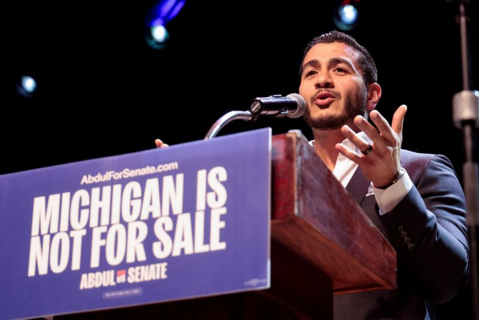

記事別メモ
1. 高市政権、消費減税を閣議決定 財源示さぬまま「見切り発車」
発行日時: 2026/08/05 16:12 JST
あなたに関係ありそうな理由: 消費者向け施策でも、価格転嫁、制度対応、財源、期限後の反動までを一つの事業環境として見る必要があるから。
政府は飲食料品の消費税率を、2027年4月から2年間、現在の軽減税率8％から1％へ下げる基本方針を閣議決定した。27年6月以降は残る1％分の税収相当額を中低所得者への現金給付に回し、食料品の税負担を実質ゼロにする構えだ。1989年の消費税導入後、減税は初めてとされる。政府はこれを、29年度から働く中低所得者向けに導入する所得連動型の給付制度までの「つなぎ」と位置づける。選挙公約の実行という政治的な意味は大きい一方、年約5兆円の減収をどう埋めるか、農家や外食業など減税で相対的に不利になる事業者をどう支えるかは、閣議決定時点で具体化されていない。コメント欄でも、公約を実現すること自体を評価する意見と、財源・制度設計・二年後の出口を先に詰めるべきだという意見が正面から割れた。とりわけ、税率を下げても原材料費、人件費、物流費を抱える企業が減税分を利益率の回復や値上げの吸収に充てれば、店頭価格が理論どおり下がるとは限らない、という指摘は実務的だ。食品は家計支出全体の一部であり、二年後に税率を戻す局面は再び価格上昇要因になりうる。政策の成否を「減税したか」だけで測らず、消費者価格、対象外業種とのゆがみ、システム改修負担、代替財源、終了時の説明まで追う必要がある。企業にとっては、制度発表の見出しより、実施細目と取引先・顧客の反応を待って判断する局面だ。
小売、外食、食品メーカー、物流、会計システム会社では影響の出方が異なる。税率変更を販促機会としてだけ扱うと、表示変更、レジ設定、契約価格、仕入れの税区分、問い合わせ対応に追われる。逆に、顧客の家計負担がどこで軽くなり、どこに軽減されないコストが残るかを丁寧に示せれば、制度変更を信頼の設計にも変えられる。短期の需要刺激と長期の財政・事務負担を分けて見る姿勢が必要だ。
制度を利用する側と運用する側の時間差まで見通してこそ、減税が暮らしと事業に残す効果を冷静に評価できる。発表日ではなく実施日、その後の検証日を意識したい。
数字だけを追うのでなく、現場の負担と家計の実感を同時に拾い、次の制度変更まで学びを残すことが大切になる。
見出しの評価を急がず、実施後の数字と現場の声で確かめたい。
仕事や会話で使える一言: 減税の効果は税率ではなく、価格への反映、財源、出口設計まで見て初めて測れます。
NewsPicks原文を読む
2. 日本通のベッセント氏、ヘッジファンド流の発想で円支援－異例の手法を次々と
発行日時: 2026/08/05 10:26 JST
あなたに関係ありそうな理由: 為替を単なる外部変数ではなく、政策当局の発信、資金調達、地政学が重なる経営リスクとして読み直せるから。
ベッセント米財務長官が円相場を支えるため、報道陣に見えるよう置いたメモに「日本円を50億－100億ドル購入」と記したことから、日米共同の円支援が注目されている。記事は、ソロス氏のもとで大規模な為替取引を経験したベッセント氏が、従来の財務官僚より市場の信認と期待形成を重視する「マクロトレーダー」的な発想で動いていると描く。米国保有ユーロの活用や、米国債を売却せずドル資金を得られるFRBのFIMAレポ・ファシリティーへの言及も、介入の原資と市場への影響を同時に意識した手段として紹介される。円は約40年ぶりの安値から反発したが、持続性は未確定だ。コメントでは「親日だから」という説明を退け、ドル高是正、米国債市場への波及回避、アジア通貨の連鎖安防止など、米国自身の利益が動機だと見る意見が多かった。実施額、制度上の根拠、共同声明にある公表約束を確認すべきだという具体的な検証も出ている。企業にとって重要なのは、為替が金利差だけで決まるという前提が揺らいでいることだ。政治家の一言、発表の見せ方、同盟国との関係が相場を動かし、輸入コスト、輸出採算、投資判断を短期に変える。介入を一時的な安心と受け取るより、ヘッジ方針、価格改定の前提、資金調達時の感応度を点検する材料にしたい。市場は資金量だけでなく、誰が誰とどこまで本気で動くかを値付けする。
とくに海外売上や輸入原料の比重が大きい会社では、想定レートを一本に固定せず、政策発言で短期間に振れた場合の利益、在庫、運転資金を複数シナリオで置くことが欠かせない。担当者だけが相場を見ている状態も危うい。購買、営業、財務が同じ前提を共有し、どの水準で価格・契約・ヘッジを見直すかを先に決めておけば、相場のニュースを受け身で眺めずに済む。今回の事例は、政策のメッセージ自体もリスク管理の入力値になることを示している。
見通しが外れた場合の行動も先に共有しておけば、為替変動を経営会議の驚きではなく、日常の管理指標として扱えるようになる。
相場の変動を事後の説明ではなく、顧客と取引先に約束する価格や納期の設計へ戻して考える習慣を持ちたい。
変化を受けるだけでなく、判断基準を組織で共有しておきたい。
仕事や会話で使える一言: 為替は経済指標だけでなく、政策当局が市場に何を信じさせるかでも動きます。
NewsPicks原文を読む
3. 急進左派が激戦州ミシガンで勝利、米民主予備選 中間選挙の試金石
発行日時: 2026/08/05 16:59 JST
あなたに関係ありそうな理由: 米国政治の党内再編は、規制、貿易、気候投資、対外政策の前提を変え、事業環境にも跳ね返るから。
米ミシガン州の民主党上院予備選で、イスラム系の急進左派アブドゥル・エルサイード氏が穏健派のヘイリー・スティーブンス下院議員を接戦で破った。開票率99％時点で得票率は48.5％対47.5％。エルサイード氏は国民皆保険、大企業・富裕層への課税強化、気候変動投資、イスラエルへの軍事支援停止を掲げ、民主社会主義を名乗る。党指導部や親イスラエル団体の支援を受けた穏健派との対立は、経済ポピュリズムと反エスタブリッシュメントを訴える勢力が、民主党の主流派をどこまで押し動かせるかを示す試金石になった。11月の本選では共和党候補と対決する。記事が置く背景は、ミシガンが近年の大統領選で共和党が勝利した激戦州であること、そして民主党支持者の自己認識がよりリベラル側に寄っているという世論調査だ。コメント欄では、主張が国民皆保険、課税強化、中絶の権利、気候投資、対イスラエル政策と明確だという整理がある一方、予備選の勢いが本選まで続くかは別問題だという慎重論も出た。日本からは遠い党内選挙に見えても、米国の通商、環境、医療、外交の政策は企業のサプライチェーンや投資判断に影響する。候補者のラベルだけで左右を判断せず、何に財源を振り、どの規制を強め、どの同盟関係を組み替えるのかを追うことが必要だ。党内の勢力図の変化は、本選の勝敗と同じくらい早く政策の選択肢を変える。
たとえば気候投資は設備・電力・自動車の需要を動かし、医療保険の議論は雇用主負担と消費を左右する。対外政策は輸出規制や調達先の選択にも波及する。日本企業が毎回選挙を深追いする必要はないが、自社に関係する政策テーマを三つほど決め、候補者と党内有力者の発言を定点観測する価値はある。大統領や議会の最終決定だけを見るより、制度案がどこから支持を得始めたかをつかむほうが、準備時間を確保しやすい。
選挙の熱量より政策の実装条件を追うことで、ニュースを感想で終わらせず、自社の投資・販売・調達の前提を更新する材料にできる。
当落の速報を越え、政策を動かす支持基盤の変化を見ることが、海外市場の前提を更新する早い手がかりになる。
その観察を、必要な準備へ静かにつなげることが重要だ。

仕事や会話で使える一言: 海外政治は勝敗だけでなく、党内で何が主流になり始めたかを見ると早く読めます。
NewsPicks原文を読む
4. 北朝鮮、日本に対する「軍事的選択肢」警告－軍備拡張容認せず
発行日時: 2026/08/05 09:08 JST
あなたに関係ありそうな理由: 安全保障の緊張は為替や物流だけでなく、サプライチェーン、サイバー、BCPの前提を変えるから。
北朝鮮は、日本が「戦犯国家」に戻る野心を持つとして、対抗のために「さらなる軍事的選択肢」を検討すると警告した。朝鮮中央通信が伝えた金与正氏の談話は、海上自衛隊によるトマホークの実射試験や、フィリピン沿岸での米国主導の合同演習への参加を例に、日本が先制攻撃能力を持つ「戦争国家」へ変わっていると主張する。記事は、日本の軍備拡張を容認する米国も批判の対象に含める。本文は発言の報告にとどまるが、コメントでは単純な非難合戦で終わらせず、北朝鮮が中国・ロシアとの関係を背景に日米連携へ揺さぶりをかける意図、国内向けの誇示、実際の抑止力をどう説明するかという論点が挙げられた。特に、相手の表現をそのまま争うより、日本が何を保有し、なぜ必要で、専守防衛や文民統制とどう両立するのかを自国の有権者へ継続的に示すべきだという意見は重要だ。企業にとっては、外交ニュースを「遠い政治」と見なさないことが出発点になる。軍事的威嚇は市場のリスクオフ、海上輸送の遅延、保険料、部材調達、サイバー攻撃の警戒とつながる可能性がある。特定の発言を過大評価する必要はないが、緊張が常態化する環境では、代替調達先、在庫、重要データの防御、連絡網を平時から点検しておく価値が増す。安全保障を感情的な議論だけにせず、事業継続の変数として扱う視点が求められる。
具体的には、重要部材の供給国と輸送経路、代替ベンダーへの切替日数、港湾や通信が止まった場合の優先業務、顧客への説明文を平時に書き出しておくことだ。BCPは大きな冊子を作ることより、責任者が不在でも連絡と判断が回るかで差が出る。地政学は確率の低い話として後回しにされがちだが、いったん起きれば広範囲の取引条件を同時に変える。自社にとっての脆弱点を小さく具体化しておくほど、過剰反応も過小評価も避けやすい。
備えの可視化は不安を増幅させるためではない。顧客、従業員、取引先へ必要な説明を速く届け、混乱を小さくするための実務である。
不測の事態が起きた日にも、誰が判断し、何を止めず、誰へ連絡するかを決めておくことが備えの実効性を左右する。
備えは非常時の混乱を減らし、日常の信頼も支える。
定期的な見直しと訓練で、机上の計画を実際に動く備えへ変えていく必要がある。
仕事や会話で使える一言: 安全保障リスクは予測の正確さより、起きたときに止まらない設計で備えるものです。
NewsPicks原文を読む
5. 顧客の現金1700万円預かったまま… 七十七銀元行員が行方不明
発行日時: 2026/08/05 18:14 JST
あなたに関係ありそうな理由: 例外的に見える不正ほど、顧客接点・証跡・異常検知をつなぐ統制の弱点を映すから。
七十七銀行は、50代の元行員が顧客一人から預かった計1700万円を口座に入れないまま連絡不明になったと発表した。元行員は2016年から22年ごろに複数回現金を受け取り、発覚前の25年2月に自主退職。顧客が26年2月に申し出て判明し、同行は全額を弁済したという。銀行側は業務外のやりとりと説明し、同様の事案の有無を調査して再発防止を検討する。金額の大きさや行員の行方だけに目を奪われがちだが、実務上の核心は、銀行員という肩書を伴う現金の受け渡しが複数回続いたのに、なぜ早期に検知できなかったのかにある。コメントでも、顧客側が正式な銀行取引だと何を根拠に認識していたか、預り証や明細があったかを確認しつつ、被害者に責任を転嫁せず、組織側の接点管理と注意喚起を検証すべきだという意見が出た。統制は規程を置くだけでは機能しない。通常の取引から外れた現金授受、高額案件、担当者個人に依存する連絡、退職前後の未解決案件を横断して見る仕組みが必要になる。顧客にとっても、相手が信頼できる担当者でも、正式な口座記録・受領証・問い合わせ窓口を確認する行動が重要だ。自社の業務に置き換えれば、営業担当や外部委託先が顧客から直接受け取る金銭、個人チャットで完結する依頼、紙や口頭だけの合意がないかを洗い出す契機になる。再発防止は「個人の逸脱」として終えず、異常を早く見つけられる情報の流れを設計できるかにかかっている。
たとえば、担当変更や退職時に未処理案件を第三者が照合する、高額・現金・例外取引を月次で別部署が見る、顧客が正式手続を確認できる連絡先を明記するといった基本が効く。監視を増やすことが目的ではなく、顧客と担当者の双方を、曖昧な善意や記憶から守ることが目的だ。内部統制は現場を疑うための装置ではなく、正しい取引を後から説明できるようにする共通の土台として設計したい。
例外を見つけた人が相談しやすく、組織が事実を記録して是正できる流れを作ることが、顧客の信頼を守るいちばん現実的な投資になる。
仕組みを点検するときは、異常な取引が誰の画面にいつ現れ、誰が顧客へ確認するのかまで具体的に決めておきたい。
小さな違和感を記録する文化が、後の大きな損失を防ぐ。
仕事や会話で使える一言: 不正防止の要点は、信用しないことではなく、個人に依存しない証跡を残すことです。
NewsPicks原文を読む